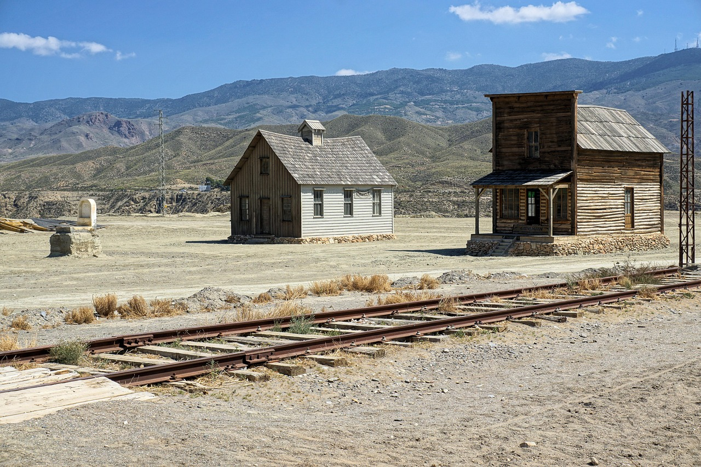
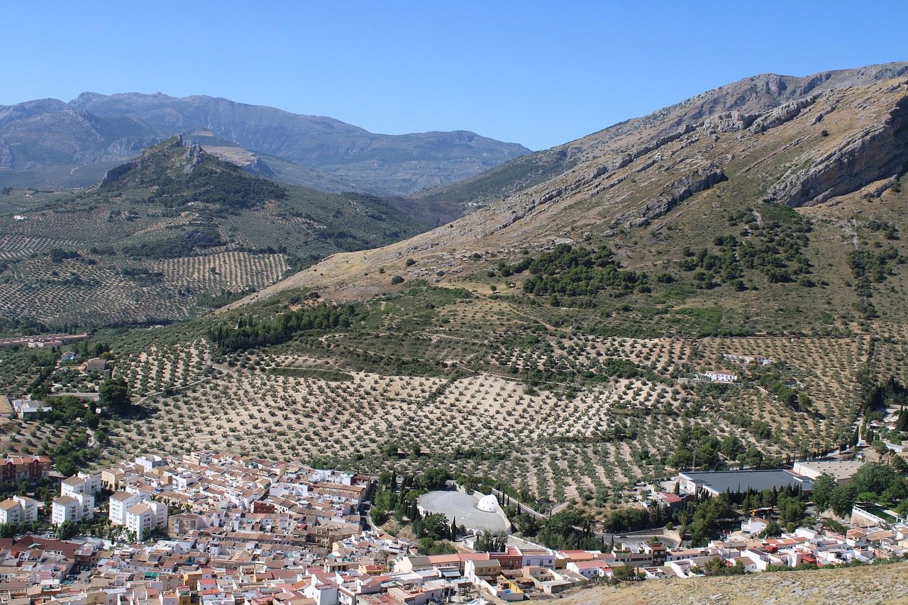
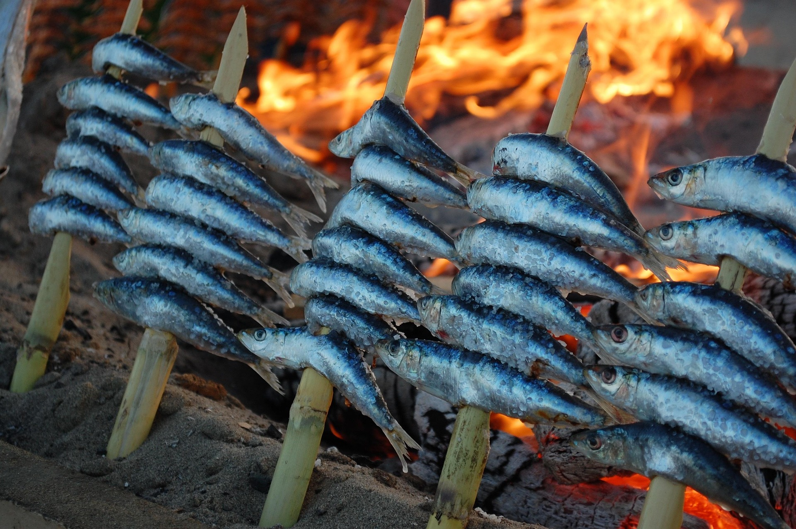
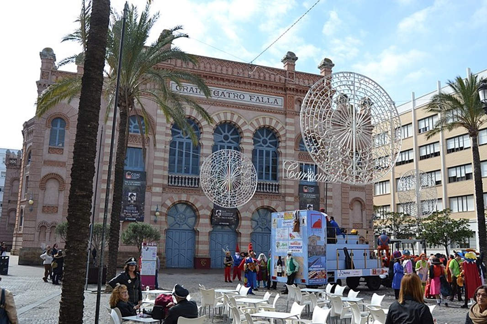

Nuestra bandera brilla con un blanco y verde esperanza que nos guiará por un viaje lleno de tesoros. ¡Vamos allá!
 Nuestra primera parada es Almería, la tierra del sol. Aquí fliparéis con el Cabo de Gata, pero también con los miles de invernaderos que parecen un mar de cristal. ¿Sabíais que aquí se sentían como auténticos vaqueros? ¡Sí! Porque en la provincia se grabaron las mejores películas de western de la historia. 🎬🤠
 Pisamos el acelerador y, tras recorrer cada kilómetro de nuestra red de carreteras, llegamos al "mar de olivos" de Jaén. ¡Es increíble! Millones de olivos nos regalan el mejor aceite del mundo. No podéis perderos Úbeda, una ciudad tan antigua y majestuosa que os hará sentir como si viajaramos en el tiempo. 🏰
 ¡Pero qué calorcito! El olor a mar nos lleva a Málaga. ¿Habéis visto cómo asan las sardinas? Usan una caña perfecta para preparar el espeto. ¡Y no os vayáis sin comer un buen boquerón frito, que es el rey de la mesa! 🐟🔥
 Seguimos la costa hasta Tarifa, donde el viento nos despeina mientras miramos hacia África a través del estrecho. ¡Casi se puede tocar! Y justo al lado... ¡La alegría de Cádiz! La ciudad que sonríe al mar con sus carnavales y sus puentes, como el puente Carranza y el nuevo puente de la Pepa. ¡Ah! Y si os entra hambre, en Grazalema hacen un queso que está riquísimo. Nuestra cultura es una fiesta: desde ir de romería con los caballos hasta bailar flamenco con toda el alma. Ya sea en Jerez (que antes se escribía Xerez) o en pueblos con nombres con tanta solera como Zahara que puede ser … de la Sierra o … de los atunes, ¡Andalucía es una explosión de vida! 💃
¡Y todavía hay más arte! En Sevilla, la capital, la Giralda nos espera para tocarnos las campanas, mientras que en Córdoba la mezquita nos deja con la boca abierta con sus arcos de colores. ¿Y Granada? ¡Pura magia! Allí los reyes de la época nazarí construyeron la Alhambra y, si miráis arriba, veréis Sierra Nevada, siempre imponente! ❄️🕌
Pero lo más increíble de Andalucía no son sólo sus monumentos o sus paisajes, es su luz y su alegría. Tenemos un cielo tan azul y brillante que parece pintado a mano, y una gente tan acogedora que siempre te recibe con una sonrisa y una palabra amable. Aquí, cada plaza es un lugar para compartir y cada rincón tiene una historia que contarte. Vivimos en una tierra que celebra la vida con alegría, donde el sol nos regala energía cada mañana y donde aprender es siempre una aventura compartida bajo el cielo más luminoso de Europa.
Es un auténtico privilegio vivir en este maravilloso lugar: ANDALUCÍA. 🚀